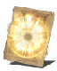

Descrição: Grande milagre usado por clérigos de alto nível. Restaura lentamente uma grande quantidade de PV.
O clérigo Forsalle de Lindelt era um mestre de milagres que participou de inúmeras batalhas. Seus aliados o chamavam de cavaleiro sagrado, mas era temido por seus "poderes demoníacos".
Localização:
Usos: 2
